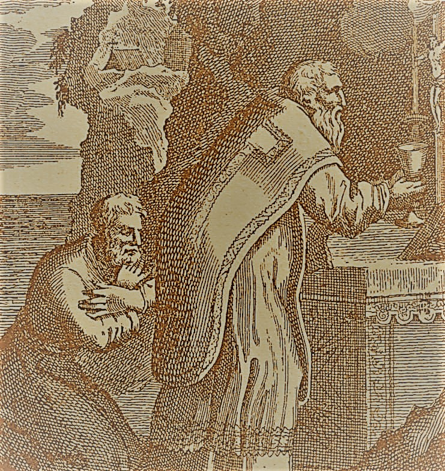

St. Victor
(189-198 or 199), date of birth unknown. The "Liber Pontificalis" makes him a native of Africa and gives his father the name of Felix. This authority, taking the "Liberian Catalogue" as its basis, gives the years 186-197 as the period of Victor's episcopate. The Armenian text of the "Chronicle" of Eusebius (Leipzig, 1911, p. 223) places the beginning of Victor's pontificate in the seventh year of the reign of the Emperor Commodus (180-87) and gives it a duration of twelve years; in his "Church History" (V, xxxii, ed. Schwarts, Leipzig, 1902, p. 486) Eusebius transfers the beginning of the pontificate to the tenth year of the reign of Commodus and makes it last ten years.
During the closing years of the reign of Commodus (180-192) and the early years of Septimius Severus (from 193) the Roman Church enjoyed in general great external peace. The favourable opinion of the Christians held by Commodus is ascribed to the influence of a woman named Marcia. According to the testimony of Hippolytus ("Philosophumena", IX, 12) she had been brought up by the presbyter Hyacinthus, was very favourably inclined towards the Christians, perhaps even a Christian herself (Hippolytus, loc. cit., calls her philotheos God-loving). One day she summoned Pope Victor to the imperial palace and asked for a list of the Roman Christians who had been condemned to forced labour in the mines of Sardinia, so that she might obtain their freedom. The pope handed her the list and Marcia, having received from the emperor the required pardon, sent the presbyter Hyacinthus to Sardinia with an order of release for the Christian confessors. Callistus, afterwards pope, who had been among those deported, did not return to Rome, but remained at Antium, where he received a monthly pension from the Roman Christians. Irenaeus (Against Heresies IV.30.1) points out that Christians were employed at this period as officials of the imperial Court. Among these officials was the imperial freedman Prosenes, whose gravestone and epitaph have been preserved (De Rossi, "Inscriptiones christ. urbis Romae", I, 9, no. 5). Septimius Severus, also, during the early years of his reign, regarded the Christians kindly, so that the influence of Christian officials continued. The emperor retained in his palace a Christian named Proculus who had once cured him. He protected Christian men and women of rank against the excesses of the heathen rabble, and his son Caracalla had a Christian wet nurse (Tertullian, "Ad Scapulam", IV). Christianity made great advances in the capital and also found adherents among the families who were distinguished for wealth and noble descent (Eusebius, Church History V.21).
Internal dissensions during this era affected the Church at Rome. The dispute over the celebration of Easter (see EASTER CONTROVERSY) grew more acute. The Christians at Rome, who had come from the province of Asia, were accustomed to observe Easter on the 14th day of Nisan, whatever day of the week that date might happen to fall on, just as they had done at home. This difference inevitably led to trouble when it appeared in the Christian community of Rome. Pope Victor decided, therefore, to bring about unity in the observance of the Easter festival and to persuade the Quartodecimans to join in the general practice of the Church. He wrote, therefore, to Bishop Polycrates of Ephesus and induced the latter to call together the bishops of the province of Asia in order to discuss the matter with them. This was done; but in the letter sent by Polycrates to Pope Victor he declared that he firmly held to the Quartoceciman custom observed by so many celebrated and holy bishops of that region. Victor called a meeting of Italian bishops at Rome, which is the earliest Roman synod known. He also wrote to the leading bishops of the various districts, urging them to call together the bishops of their sections of the country and to take counsel with them on the question of the Easter festival. Letters came from all sides: from the synod in Palestine, at which Theophilus of Caesarea and Narcissus of Jerusalem presided; from the synod of Pontus over which Palmas as the oldest presided; from the communities in Gaul whose bishop of Irenaeus of Lyons; from the bishops of the Kingdom of Osrhoene; also from individual bishops, as Bakchylus of Corinth. These letters all unanimously reported that Easter was observed on Sunday. Victor, who acted throughout the entire matter as the head of Catholic Christendom, now called upon the bishops of the province of Asia to abandon their custom and to accept the universally prevailing practice of always celebrating Easter on Sunday. In case they would not do this he declared they would be excluded from the fellowship of the Church.
This severe procedure did not please all the bishops. Irenaeus of Lyons and others wrote to Pope Victor; they blamed his severity, urged him to maintain peace and unity with the bishops of Asia, and to entertain affectionate feelings toward them. Irenaeus reminded him that his predecessors had indeed always maintained the Sunday observance of Easter, as was right, but had not broken off friendly relations and communion with bishops because they followed another custom (Eusebius, Church History V.23-25). We have no information concerning the further course of the matter under Victor I so far as it regards the bishops of Asia. All that is known is that in the course of the third century the Roman practice in the observance of Easter became gradually universal. In Rome itself, where Pope Victor naturally enforced the observance of Easter on Sunday by all Christians in the capital, an Oriental named Blastus, with a few followers, opposed the pope and brought about a schism, which, however, did not grow in importance (Eusebius, loc. cit., B, xx). Pope Victor also had difficulties with a Roman priest named Florinus, who probably came from Asia Minor. As an official of the imperial court, Florinus had become acquainted in Asia Minor with St. Polycarp, and later was a presbyter of the Roman Church. He fell into the Gnostic heresy and defended the false learning of Valentine. St. Irenæus wrote two treatises against him: "On the Monarchy [of God] and that God is not the Author of Evil", and "On the Ogdoad". Irenaeus also called Victor's attention to the dangerous writings of Florinus, who was probably degraded from his priestly functions by the pope and expelled from the Church (Eusebius, Church History V.25.20).
During the pontificate of Victor a rich Christian, Theodotus the Leather-seller, came from Constantinople to Rome and taught false doctrines concerning Christ, Whom he declared to be merely a man endowed by the Holy Ghost, at baptism, with supernatural power. The pope condemned this heresy and excluded Theodotus from the Church. The latter, however, would not submit, but, together with his adherents, formed a schismatic party, which maintained itself for a time at Rome. Victor may also have come into contact with the Montanists. Tertullian reports ("Ad Praceam", 1) that a Roman bishop, whose name he does not give, had declared his acceptance of the prophecies of Montanus, but had been persuaded by Praxeas to withdraw. Duchesne ("Histoire ancienne de l'église", I, 278) and others think Tertullian means Pope Eleutherius, but many investigators consider it more probable that he meant Pope Victor, because the latter had had much to do with the inhabitants of Asia Minor, and because, between 190 and 200, Praceas had gone from Rome to Carthage, where he was opposed by Tertullian. The question cannot be decided positively.
Jerome calls Pope Victor the first Latin writer in the Church (Chronicon, ad an. Abr. 2209); he mentions small treatises (mediocria de religione volumina, loc. cit.; cf. "De viris illustribus", XXXIV: "Victor, thirteenth bishop of the Roman city, the writer of certain opuscula on the paschal question and others, ruled the Church ten years under Severus"). Besides the letters touching the Easter controversy none of St. Victor's works is known. Harnack tried to prove that he was the author of the treatise against the dice-throwers ("De alcatoribus"), erroneously ascribed to St. Cyprian (see "Texte und Untersuchungen," V, Leipzig, 1899), though the opinion is how universally rejected (cf. Harnack, "Geschichte der altchristl. Literatur", II, pt. II, 370). It was during Victor's administration, perhaps, that the canon of Scripture used at Rome, and which has been partially preserved in the Muratorian Fragment, was drawn up. In the note concerning him in the "Liber Pontificalis" (ed. Duchesne, I, 137) the Easter controversy is also mentioned; in addition, the introduction of sequentes among the clergy is also attributed to him. It is not certain what this means, whether it applies to the acolytes, or to the assistants who appeared later at Rome for such clergy as were much occupied with the administration of their cures. In any case the note is one of those which the author arbitrarily inserted into the biographies of the various popes, and has, accordingly, no historical value. The same is true of the ordinance respecting the administration of baptism in cases of necessity ascribed to Pope Victor by the same author.
EUSEBIUS, Church History V.20-27; Liber Pontificalis, ed. DUCHESNE, I, 137-138; Acta SS., July, VI, 534-542; LANGEN, Geschichte der römishen Kirche, I (Bonn, 1881), 176 sqq., 179 sq., 182 sqq.; DUCHESNE, Histoire ancienne de l'église, I (Paris, 1906), 251 sq., 277 sq., 289 sqq.
Kirsch, J.P. (1912). Pope St. Victor I. In The Catholic Encyclopedia. New York: Robert Appleton Company. Retrieved April 26, 2010 from New Advent: http://www.newadvent.org/cathen/15408a.htm